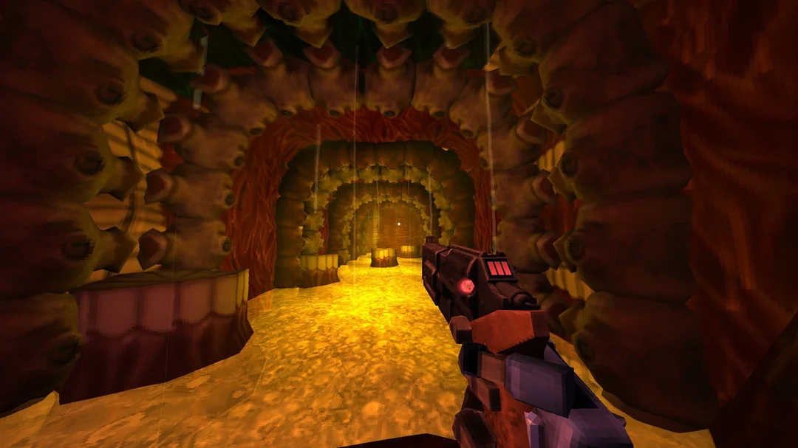

ULTRAKILL
Геймплей
Жанр - Boomer-shooter. Игрок контроллирует робота, работающего на крови. Машина спускается в глубины ада в поисках топлива. Задача игрока - пройти как можно ниже.
Особая механика игры - возможность лечиться на ходу кровью демонов. Благодаря этой механике, игрок всё время находится в центре событий, не отвлекаясь на поиск аптечек.
Список персонажей
- V1 - Главный герой, персонаж под контроллем игрока.
- Габриэль - Главный антоганист игры и протагонист её повествования. Архангел, пытающийся остановить нашествие машин в ад.
- V2 - Другой протоип модели V. Имеет броню прочнее, чем V1, но не способен лечиться на ходу.
- "Отец" - Бог, создатель всего. На момент событий игры он бесследно исчез.
- Ад - Разумный, колоссальный, садистский мегаорганизм, внутри которого происходят события игры.
Интересный факт
Почти каждый "слой" ада содержит в себе секретный уровень. Такие уровни совершенно не похожи на остальную игру.
Например 0-S превращает игру в хоррор, 5-S это симуятор рыбалки, а 2-S - визуальная новелла.
Скриншоты из игры



Ссылка на офицальную вики